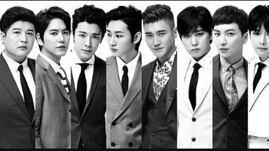
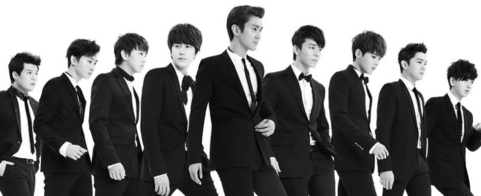
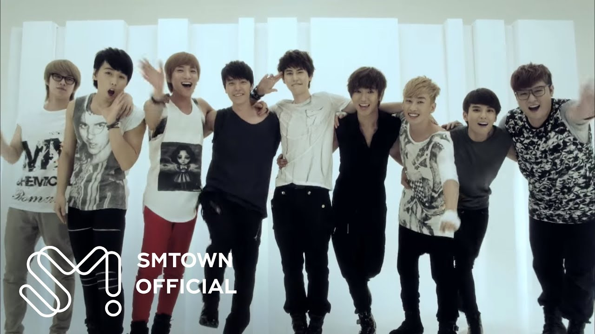

Super Junior en coreano 슈퍼주니어 o simplemente SuJu para abreviar, es un grupo de 13 miembros, quien vio la luz el 6 de noviembre del 2005 con solo 12 miembros con su primer single Twins. Los primeros 12 miembros fueron ( De mayor a menor) Lee Teuk (El lider), Hee Chul, Han Kyung, Ye Sung, Kang In, Shin Dong, Sung Min, Eun Hyuk, Dong Hae, Si Won, Ryeo Wook, y Ki Bum.
Cuando Suju comenzó estaba compuesto por 11 Coreanos y un Chino, Han geng o Hang Kyung el miembro Chino, fue escogido en una audición en China entre 3000 participantes, por SM Entertainment en el 2001, los demás miembros ya actuaban, modelaban o bailaban antes de pertenecer a Super Junior. El 23 de Mayo del 2006 SM anunció la adicción de un nuevo miembro “Cho Kyu Hyum” convirtiéndose en el miembro numero 13.

Super junior
Debut
Super Junior apareció por primera vez en Televisión en SBS Inki Gayo el seis de noviembre del 2005, el grupo interpretó su primer single “Twins (Knock Out)”. Twins y You are the one, aparecieron Online el 11 de noviembre del 2005 como single, pero el álbum completo no salió hasta el 7 de Diciembre del mismo año. En diciembre, Super Junior colaboro con la popular banda TVXQ en un single que cantaron juntos, llamado “Show me yout Love” durante este tiempo, los dos grupos tuvieron una agenda apretada juntos, aparecieron en diferentes shows para promocionar el single.

Super junior

Super Junior